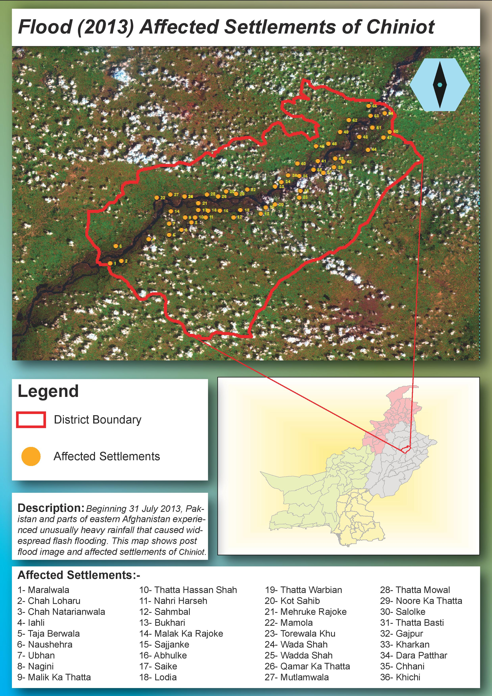

What this map was made for
The purpose of this map was to communicate the local impact of the 2013 flood in District Chiniot. Instead of only showing a flood extent or satellite image, I wanted to connect the flood pattern with settlement-level information. This makes the map more useful for understanding which communities were exposed, where they were located, and how the affected settlements followed the river corridor through the district.
The map was designed as both a visual product and a reference document. The main satellite image shows the flood environment, while the numbered settlement points and settlement list help the viewer identify affected locations.
How I used Landsat imagery
I used Landsat 8 imagery as the base for the flood interpretation. In ArcGIS Pro, I worked with band combinations and color composites to make water, vegetation, bare soil, and settlement areas easier to distinguish. This was important because floodwater is not always obvious in a natural-color image, especially when there are clouds, wet soil, vegetation, and river floodplain patterns in the same scene.
The dark-toned water and floodplain areas in the imagery helped guide the visual interpretation of the flood-affected corridor. I then overlaid the Chiniot district boundary and added the affected settlements as point features so the flood pattern could be connected to populated places.
How I built the map
I processed the satellite image first and used it as the main visual base. After that, I added the Chiniot district boundary to define the study area. The affected settlements were digitized or plotted as point features and then numbered so they could be matched with the settlement list in the lower part of the layout.
I also created an inset map showing the broader location of Chiniot within Punjab and Pakistan. This inset helps viewers understand the regional location of the flood-affected district without taking attention away from the main map.
Design choices I made
I used a bright red boundary for Chiniot because it stands out clearly over the satellite image. The affected settlements are shown with orange circular symbols, which remain visible over green vegetation, darker floodplain areas, and mixed satellite tones. This color contrast was important because satellite imagery can be visually complex.
The layout includes a large title, legend, description box, inset location map, and a numbered affected-settlement list. I used these elements so the map could be read quickly but also used as a reference for identifying individual affected communities. The design is intentionally direct because disaster maps need to communicate clearly.
What the map shows
The map shows that the affected settlements are not randomly distributed across the district. Many of them follow the darker floodplain and river corridor visible in the satellite image. This pattern helps show how flood exposure is strongly linked to local terrain, drainage, and settlement location.
The map also shows that flood impact can be communicated more clearly when satellite imagery is combined with settlement-level information. The imagery provides environmental context, while the settlement points show where people and communities were affected or exposed.
What I learned from this map
This project helped me understand how useful satellite imagery can be for post-flood mapping, especially when field information is limited. It also showed me that remote sensing interpretation depends heavily on choosing the right band combination and visual contrast. A flood pattern that is difficult to see in one image display can become much clearer in another.
I also learned that disaster mapping is not only about showing the hazard. A useful flood map should connect the hazard to people, settlements, and administrative areas. That is why the affected settlement list, district boundary, and inset location map are important parts of this layout.